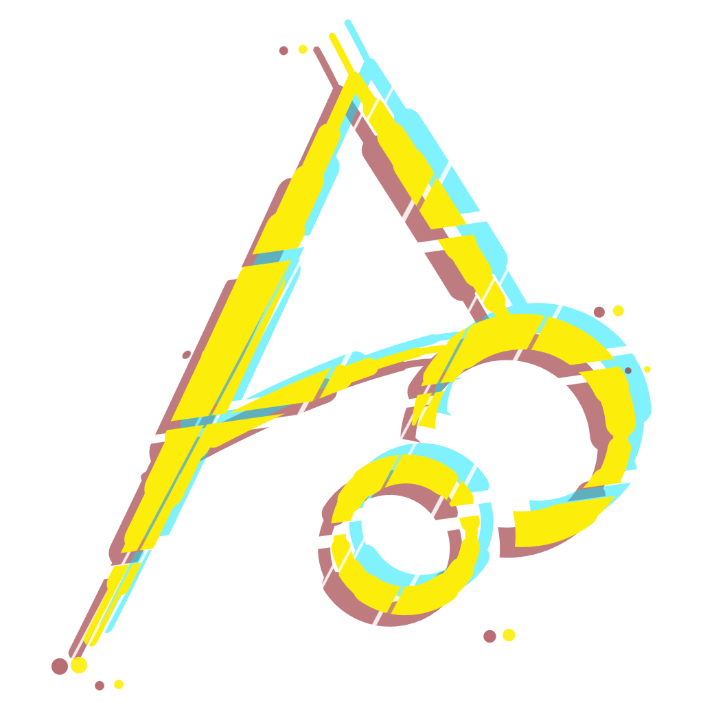
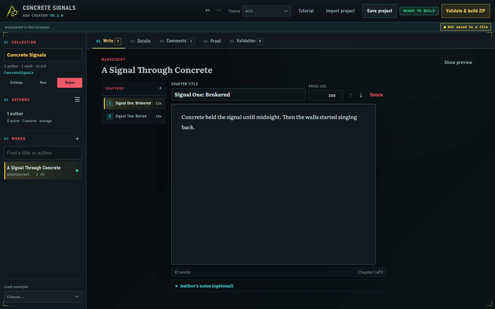
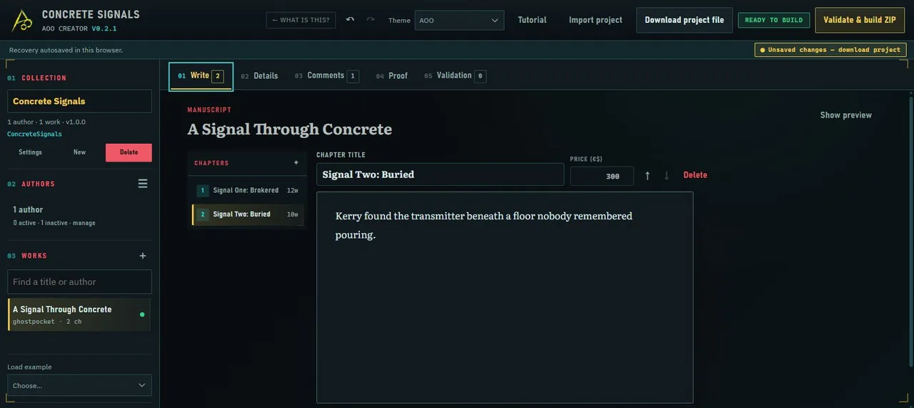
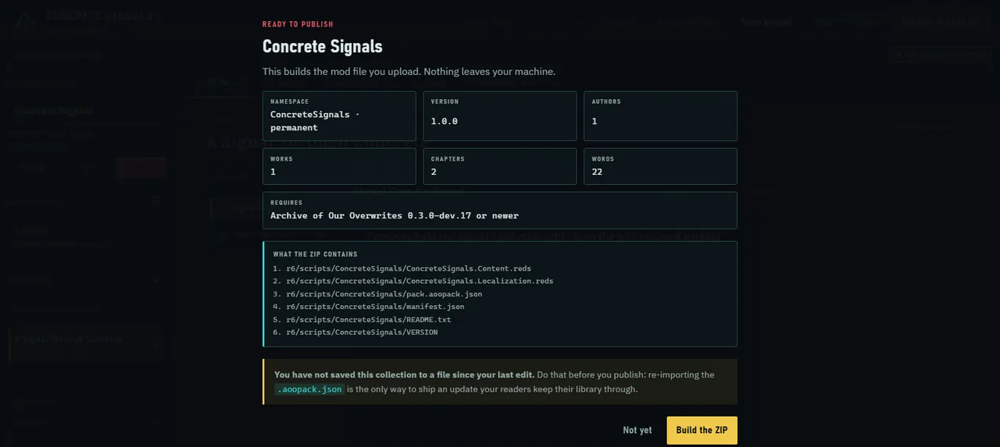
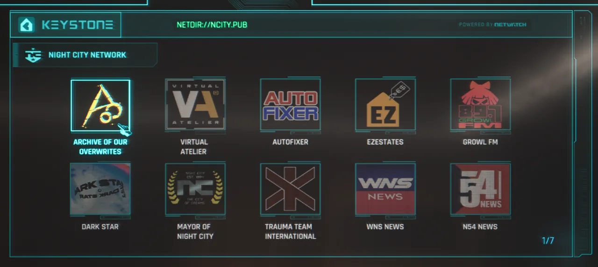
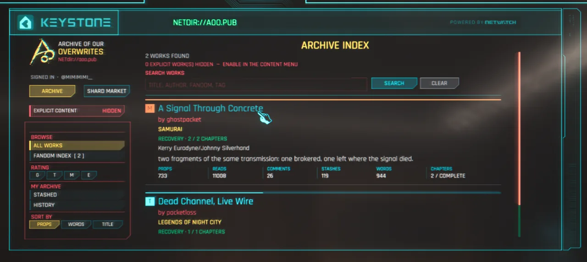
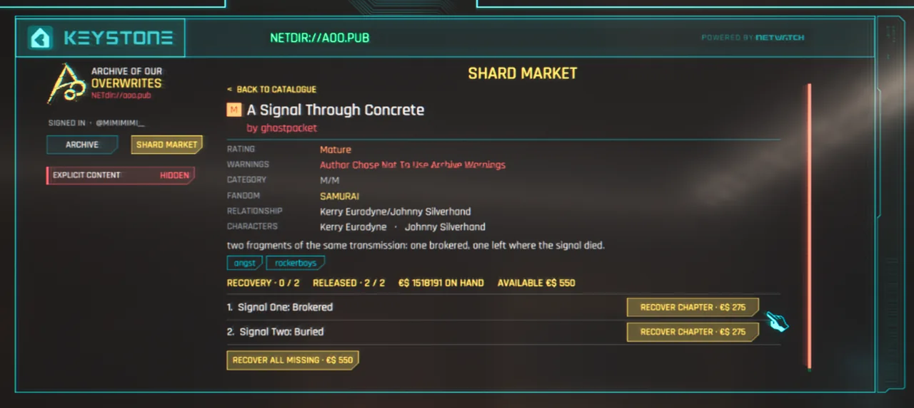
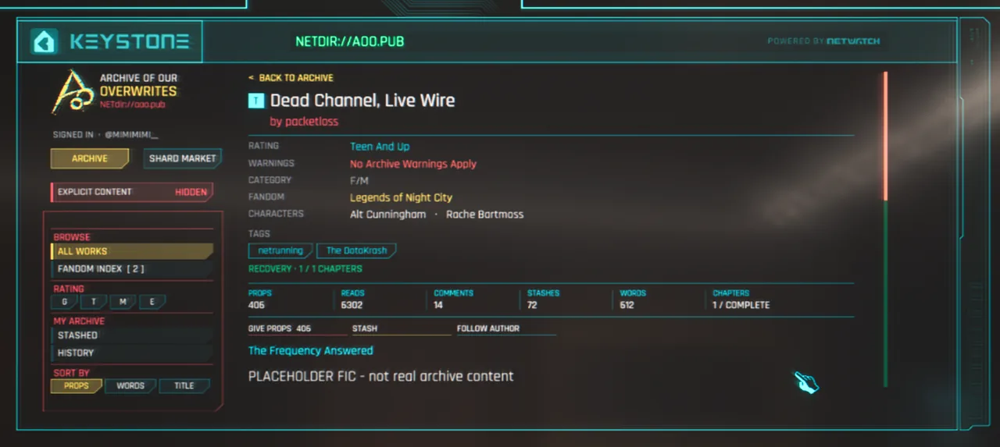

Write
Works, chapters, authors, tags, ratings and archived comments. A word count that updates as you type, and a live card showing how readers see it.

Archive of Our Overwrites
Write fic collections for Night City and export a Nexus-ready mod. Readers who have the AOO mod installed find your work on the in-game archive, exactly as you wrote it.
What it does
You write prose. The tool handles the REDscript, the manifest, the namespacing and the folder layout — the parts that fail silently if you get them wrong.
Works, chapters, authors, tags, ratings and archived comments. A word count that updates as you type, and a live card showing how readers see it.
Both widths the game renders at, side by side. Long titles and big tag walls break here first, where you can still fix them.
Validation catches the errors that would break in-engine, then builds a ZIP you upload to Nexus as-is.
The tool

The output
Everything is namespaced under your collection, so two packs installed together never overwrite each other.
Nexus-ready. No repacking, no folder shuffling. The ZIP is the file you upload.
r6/scripts/YourCollection/ ├── YourCollection.Content.reds works, chapters, comments ├── YourCollection.Localization.reds every string readers see ├── manifest.json schema v1, read by the AOO core ├── pack.aoopack.json your project file, for updates ├── VERSION the collection version └── README.txt credits and install notes
Where it ends up
The same fic, all the way through: written in the Creator, then read on the in-world archive by anyone who installed your mod.






In the CreatorYou write the fic. Chapters, tags, byline, ratings.
One clickValidation passes and it builds the mod file you upload.
On the NetReaders reach the archive from the Night City network.
In the archiveYour collection, with its own stats and byline.
On the marketChapters recovered with eddies, exactly as you priced them.
Read in Night CityTags, warnings, props, comments. Your work, in the world.
Make it yours
Every one is contrast-audited before it ships, so a theme is never a choice between looking good and being readable.
Two ways to run it
Nothing to install. Your work autosaves in this browser only — it is never sent anywhere, which also means clearing site data clears it. Save a project file early.
One HTML file, identical to this site. Double-click it — no server, no connection. Keep it, copy it, pass it to another writer.